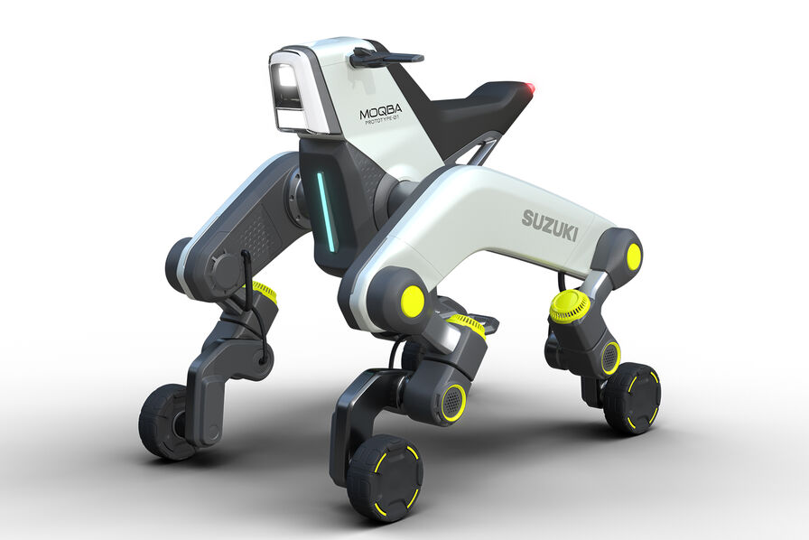

L'entreprise japonaise,Suzuki est spécialisée dans le domaine de la construction automobile dévoile en début octobre lors du salon japonais de la mobilité le projet Maqba un quadricycle éléctrique capable de monter des escalier en transportant une personne.
Le véhicule est électrique, il ne consomme pas beaucoup d'énergie.
Grâce à ses accessoires de base qui permettent au véhicule d'avoir 3 modes une chaise, debout et civière,
Moqba peut faire office fauteuil roulant, il peut transporter des blessés qui se trouvent dans des zones difficiles
d'accès et livrer à domicile.
La vitesse du véhicule est basse, elle est limitée à 32km/h pour une autonomie de 80 kilomètre.
En plus d'avoir une fonction d'utilité publique Moqba a plusieur mode permettant à l'utilisateur de l'utiliser de plusieurs façon différentes.
L'inconvénient de Moqba est sa vitesse limiter à 32km/h.